孖仔帮与您分享双胞胎育儿经
点击蓝字
关注我们
文|圆圈妈，一个文思如尿崩的双胎妈妈
01
继上两篇文章《嘿！双胞胎孩子的亲子阅读攻略，要来一份吗（0--1岁阶段）》和《嘿！双胞胎孩子的亲子阅读攻略，要来一份吗（1--2岁阶段）》
继续说说圆圈兄弟2—3岁时，我和他们哥俩的双胞胎亲子阅读经历。
相比0—1岁，1—2岁那两个阶段的亲子阅读，2—3岁的双胞胎亲子阅读，我有种农奴翻身当家作主的感觉。
幸福来得太突然，我来不及换表情了。
再也不用求爷爷告奶奶似的拖着他们坐在我边上看绘本了。
因为圆圈哥俩的阅读习惯几乎固定了，就好像一日三餐一样，晚饭后和睡前都要读一会儿书才肯睡。
2岁到2岁半期间，他们对幼儿百科里面的图案已经很熟悉了，部分英文单词也能在提示下说出来。
结合实际情况，我开始给他们看一些有故事情节的书。
为了他们的入园准备，给他们买了《我要上幼儿园》...
担心他们跟陌生的漂亮阿姨跑路了，我就给他们看《我不跟你走》...
他们不爱刷牙，我给他们看《小熊不刷牙》...
这种有情景的书，非常合适这个阶段的他们，有一定的认知理解能力，能从绘本中学到知识，并学以致用，因为跟生活息息相关，而更加对绘本喜爱有加。
再配上一些夸张的语气和动作，总能轻易引起他们的阅读兴趣。
虽然，他们看书的积极性提高了不少，但我还是遇到了其他问题。
他们做什么事情都要自己来，必须自己亲自翻书。
有次，我担心他们会撕坏书本，帮他们翻书，结果圈圈大哭一场。
有时候他们也会为了谁来翻书，再一次互相厮杀！
可怕的两岁，真的太可怕了，我经常被他们刺激到神经严重衰弱。
同时面对两个可怕的“两岁”，我感觉我能活过来真的很不容易，还能坚持在亲子阅读路上，更加对自己顶礼膜拜了。
我又恢复到当初他们0—1岁那会的心态了---“看破红尘，归于佛门”
不必太较真了！随他们吧！
仅存的几口仙气还得留着以后用，这点小事还是“一笑泯千仇”吧！
这种情况一直持续到2岁半之后，我又换了批书。
因为对他们各自的性格特征和秉性几乎摸清了，结合实际买了些感觉他们会感兴趣的书。
果然，他们有各自爱看的书，出现抢书的情况减少了。
有时候他们还会互相交流，互相推荐，这本书好看，这本书不好看。
甚至他们还能对一本彼此都喜爱的书一起共读，全程和睦相处…
3岁，开始上幼儿园之后，可能是有前期的积累，我觉得跟他们的亲子阅读几乎无障碍了。
买来的书本已经不能满足他们的需求了。
我直接带着他们去图书馆的少儿阅览室，随便他们按自己喜好找书看，我也乐得清闲。
02
2—3岁的双胞胎亲子阅读建议
如果前期的亲子阅读有用心地积累，2—3岁阶段的亲子阅读会轻松很多，孩子将会从开始被动式的阅读，到现在享受式的阅读。
但每个阶段都有让我们头疼不已的问题，有些问题从一开始就有，到了2—3岁这个阶段，更加明显。
因此，靠坚持和耐心还不够，还得根据随时冒出的问题逐一攻破，下面根据我的经历列出这些常见问题并给出解决办法。
注意力不集中
几乎所有孩子都会有这种情况，父母在读着绘本的时候，孩子往往心不在焉，活脱脱的“人在操营心在汉”
圆圈2岁3个月的时候，就是这种情况。上一秒眼睛还看着书本，下一秒就溜走去拿角落里的玩具。
我很明确地告诉他们，要么玩玩具，要么看书，总之只能选一样，让他们自己选择。
2岁的他们已经完全能GET到大人的指令了，就看你在他们心目中够不够分量。
如果选择玩具，那就作罢，随他们。
如果选择继续看书，那就要求他们必须守规矩。
总是会被打断
这个阶段的孩子，简直是问“为什么”的专业户。也从来不知道随意打断人是不礼貌的行为。
只管自己天马行空的想象力，然后脱口而出，“是什么啊？”“为什么呢？”
圈圈貌似有强迫症，总是特意打断我，某些词语不应该那样念，非要我按照他的腔调来念。若没有按照要求或者模仿得不够好，他还会不依不饶地缠着你念到满意为止。
圆圆经常打岔，总是问“什么”“为什么”让人相当烦躁，如果我不停下来正视他的问题，他会把问题一直问，逼着我无法继续。
一本才26页装的简单绘本，30分钟过去了，我还没讲完！
我刚开始火大得很，因为好想赶紧读完让他们睡觉。但转念一想，我这样读，他们不听，也没啥意思啊。
他们现在对事物的认知越来越深入了，并不满足表面上看到的画面，他们的问题灵感往往是稍纵即逝的，我们应该抓住这个契机给他们源源不断地输送知识，
对于圆圈这样的行为，我应该感到高兴，甚至鼓励他们的探索精神。
因此，如果他们非常执着于一个问题，那停下来简单回答也无妨。
如果他们的问题真的很没完没了，严重影响了读绘本，那建议你这样对两捣蛋鬼说：“你们的问题真不错，但是请不要打断我，我讲完之后，可以轮到你们提问题，谢谢你们的配合”
然后抱抱他们，鼓励下。
一本书要读N遍
同一本书重复读上好几遍，每个当父母的都深有体会。
圆圈兄弟也不例外。
圆圈很着迷《深夜的铁路》这本书，为此我不得不在图书馆续借了两个月。后来圆圆又迷上了另一个书《就快了》，一个晚上我就在这两本书中不停地切换…而且必须指定由我来讲，他人不能代劳。
苍天啊！谁帮我把这两泼猴给暂时收了去！
如果他们同时看上一本书，那倒没什么，重读几遍也是OK 的，可是如果他们都分别要求读不同的书，并无限次循环，那这个N遍估计得变成N的N次方了。
有人说，对一本书的重复阅读，于孩子而言也绝不是简单的原地踏步，而是一个他对这本书理解消化完整吸收的螺旋式上升的过程。
我参不透这句话，但我很清楚，圆圈兄弟是个打破砂锅问到底的小主子，他们的理解能力还在完善中，只能通过反复的听去获取到之前不大了解的部分。
这恰是他们认真阅读的有力证明啊！
我们还可以换位思考下，利用他们对绘本的浓厚兴致把多读几遍绘本转换成一种赏赐。
鼓励他们，若表现好就可以给他们喜欢的绘本多读几遍。
自己也不累，孩子也收益。
但是前提是孩子对这个绘本是真爱，可以不惜一切代价与你交换，不然你就等着自编自导吧！
03
2---3岁亲子阅读的一些技巧
重视他们的问题
这个阶段的两活宝，不用你引导，还没等你发问，甚至等不及你读完就已经冒出很多问题了。
我非常发愁圆圈的那些问题，不知道怎么回答。
有些很幼稚，有些无厘头，有些让我觉得，“我在地球上，他们在太空中”...
老母亲我表示招架不住！
有时候我忘记问问题就翻开另一页了，他们会提醒我：“妈妈不要那么快，我还没有问问题。”
其实不是我忘记了，而是我真的怕了那些莫名其妙的问题，能力有限，回答不上来。
可我又不能敷衍了事，只能竭尽所能地回答，实在回答不了，就避重就轻，开放式回答，或者让他们自己去找答案。
鼓励他们给你读书
他们提出的问题很多，同时也是在释放一种信号，他们有表现欲望了，也想要自己讲书了。
那就给他们机会吧！
营造一个氛围，充分发挥双胞胎孩子得天独厚的优势，让他们比赛。
当然，他们应该不能把绘本完整读出来，这个时候不要打击他，要不断鼓励他。
如果他们讲到好笑的时候，也要发自内心符合地笑。让他们知道,自己是备受重视的！
注意，不能假笑哦，你是不是真的的笑，小孩子的心思很细腻，很容易就感觉到。
讲完后，可以让他们互相评价，谁讲的好，谁讲的不好，哪里不好。
注意，我们大人点评的时候，要一碗水端平，免得让他们互相较劲就不好了。
阅读姿势，怎么舒服怎么来
我想象中的亲子阅读是这样的：让孩子窝在怀里，一页一页默契地看下去，非常温馨有爱。
然而，我家的画风是这样的。
给他们读绘本的时候，圆圈兄弟横七竖八地趴着，跪着，站着，坐着，躺着，不同姿势，各种切换。
果然，好孩子都是别人家的！
小月龄的时候，我还可以把他们抱着分别放腿上随意摆布，装作很温馨和谐的样子，再大一点，他们很好动，根本不受我控制。
当我读绘本的时候，他们就摇晃我的椅子，或者抓下我的耳朵，拉扯我的衣服，甚至从背后冷不丁勒住我的脖子….
这哪是在亲子阅读，我感觉我是被他们拖去刑场“打靶”用的！
起初我担心他们上学了也是这样的阅读姿势，习惯不好，试图纠正他们，但收效甚微。
后来又想开了，其实也没什么好在意的，只要大人和孩子舒服、自在，能享受到这段阅读时光的乐趣，让孩子有参与感，这样就足够了。
最后，上帝给我走后门了。
有一天我告诉圆圈，他们在肚子里的时候，圆圆在左上方，圈圈在右下方。
嘿，他们自发形成座位顺序，再也不乱坐了。
写在最后的话：
有宝妈问我凭什么能坚持下来，其实我并没有刻意的坚持。
现在很多文章都提到亲子阅读的重要性和各种好处，可我并没有因此而逼着自己，逼着圆圈一起阅读。
可能是我太幸运了，无心插柳柳成荫。
这并无放马后炮的意思。
我一直觉得不带任何目的，随心而至，随心所欲的阅读恰恰就是孩子最需要的！
我的初衷也很简单，就是让孩子阅读时有所得，有所思，有所感，重在阅读过程中亲子互动带来的愉悦感。
因此，我与圆圈的亲子阅读，应该说是我与他们一起成长的一个缩影，一种表达方式罢了！
而我们娘仨能幸运地坚持下来，仅此而已！
希望你们也如我这般，在亲子阅读上更加顺利。
有人说，3岁以前，书就是一种玩具，读书就是一种玩法。你给孩子的玩法越好，他就会越喜欢。
再赞同不过了。
让他们在玩耍中去读书，获取到知识，并牢记于心，终生受用。
我在教圆圈学英语的时候也是秉承这样一个理念。
不在乎他们记住语法词汇，只是在学习过程中，更加深刻地认识到这个世界，明白鸭子原来也叫“duck”，所以经常“嘎~嘎~嘎~”
我与圈圈兄弟的亲子阅读三个阶段的经历就这么多啦，
可是依然感觉还有很多细节上的经验没有写出来，有空再出我的双胞胎亲子阅读第四集哈！
你们在亲子阅读上还遇到哪些问题呢？给我留言吧，看看我是不是也有同样困扰，我们一起探讨哦！交流下经验，治治家里那两只熊孩子！
顺便提一个小贴士：
因为最近在家里教圆圈学英语，总结了点经验，读绘本和学英语可以融会贯通。
跟孩子读绘本的时候可以顺便教他们学英语，掌握更多的英语词汇。
比如当天教了他们动物的单词，正好读绘本的时候看到了，就可以顺便考一考他们，怎么读，随时随地唤起他们的记忆，学以致用，既能扩大词汇量又能巩固到知识点。
这个经验非常值得跟大家分享下，后面也会整理出来分享给有需要的宝妈。
须知道现在上英语培训班，请英语外教需要一大笔钱啊。
最后，推荐3本描写双胞胎的书籍，非常温馨的书目！
《双胞胎的小被子》
《奇奇和怪怪真奇怪》
《双胞胎兄弟》
具体书目章节，我有扫描稿，有需要的宝爸宝妈可以私信我发电子版给你们哦！
END
上期推文：
嘿！双胞胎孩子的亲子阅读攻略，要来一份吗（0--1岁阶段）
嘿！双胞胎孩子的亲子阅读攻略，要来一份吗（2--3岁阶段）
本文系圆圈妈sgguy-com原创，来源于孖仔帮，专注双胞胎孕期育儿经验分享，著作权归孖仔帮所有。
105:同卵双胞胎的天敌--双胞胎输血综合征
201:双胞胎与唐氏筛查---美丽的邂逅
212:原来双胎妈妈可以这样数胎动，好简单啊
215:双胎子宫日记系列|（下）你看不看？双胞胎妈妈直播剖腹产全过程
302:喂养干货||如何训练双胞胎宝宝睡整夜觉
306: 真人示范！双胞胎妈妈高难度喂母乳技巧
404:双胞胎家庭生存技巧01：舍不得孩子套不住狼，新生入园开学季必备
714:那个每天晚上9点钟才到家的双胎妈妈，失业了…
219双胞胎准爸爸的生存指南：不做猪一样的队友，活着出来喜当爹
220双胞胎准妈妈，其实你的产检方式一直搞错了…
222:看过这份最简单的双胞胎宝宝用品囤货清单，其他的都是将就
我猜你肯定喜欢看上面的文章，对不对嘛？关注孖仔帮，回复文章前面的数字编号即可阅读。
长按识别二维码关注我们
关于这个号
谢谢关注！我是圆圈妈
85后，全职双胎妈妈
家有孖仔男宝两枚，圆圈&圈圈
双胞胎育儿公众号：孖仔帮
旨意分享双胞胎育儿经验帮助双胞胎家庭
有经验可循
有组织可靠
希望我的经验对您有所启发
期待与您一起共享双胞胎育儿经
孖仔帮目前有4个微信社群
孕期群，喂养群，闲置群，双胞胎爸爸专属群，
如需入交流群，请+圆圈妈的微信号sgguy-com,或扫描下方二维码
由圆圈妈邀请入群
更多孖仔帮双胞胎原创育儿文章请猛戳 "阅读原文" 或者直接上圆圈妈的个人博客。
博客链接：https://www.sgguy.com/twinsbang


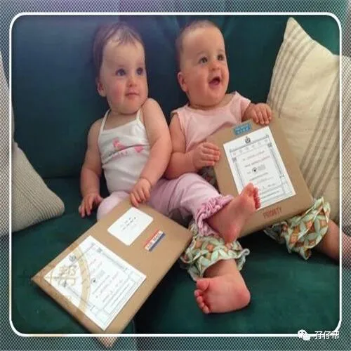
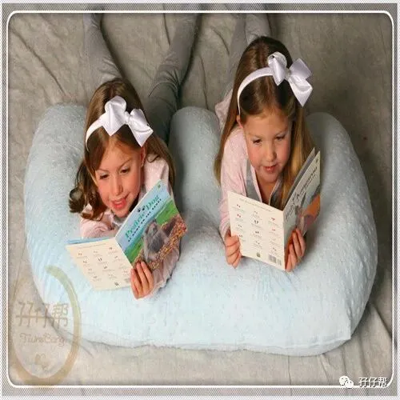
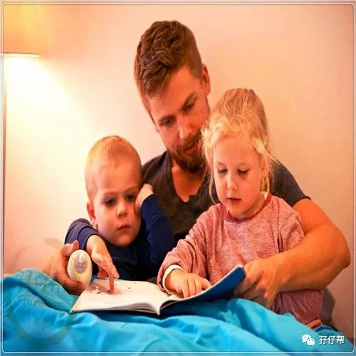

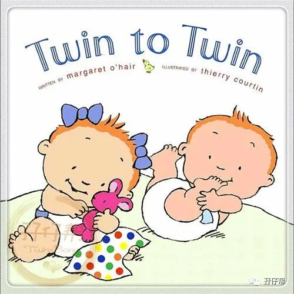
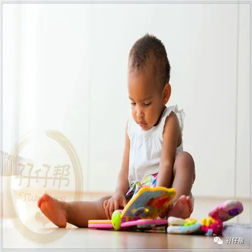
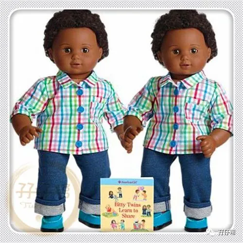
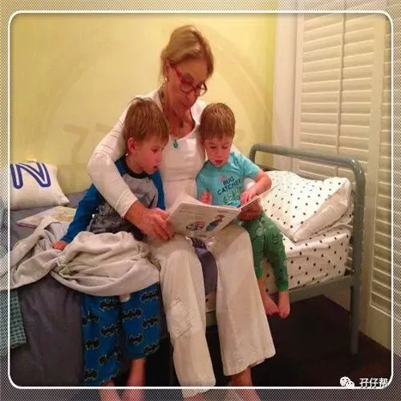
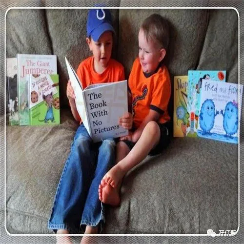
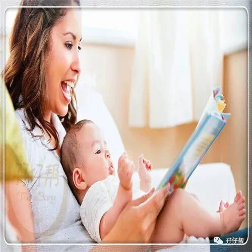
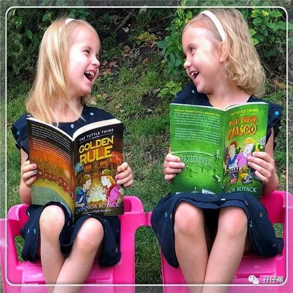
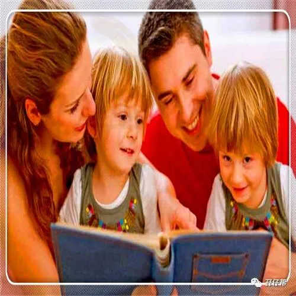
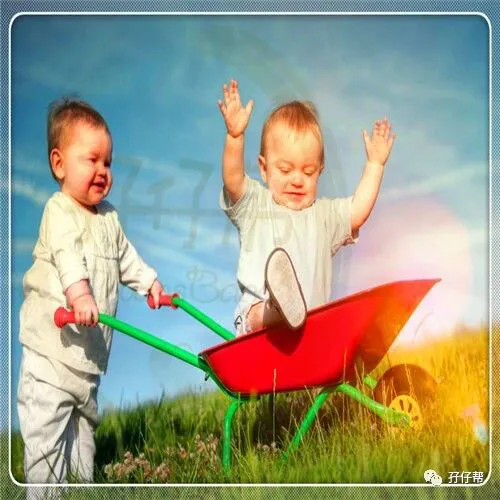
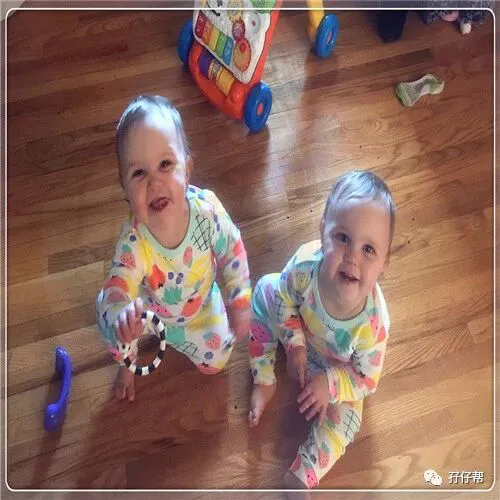
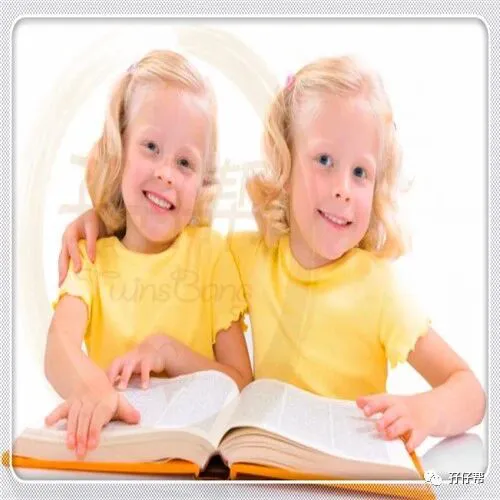
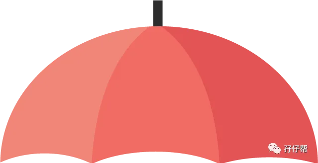